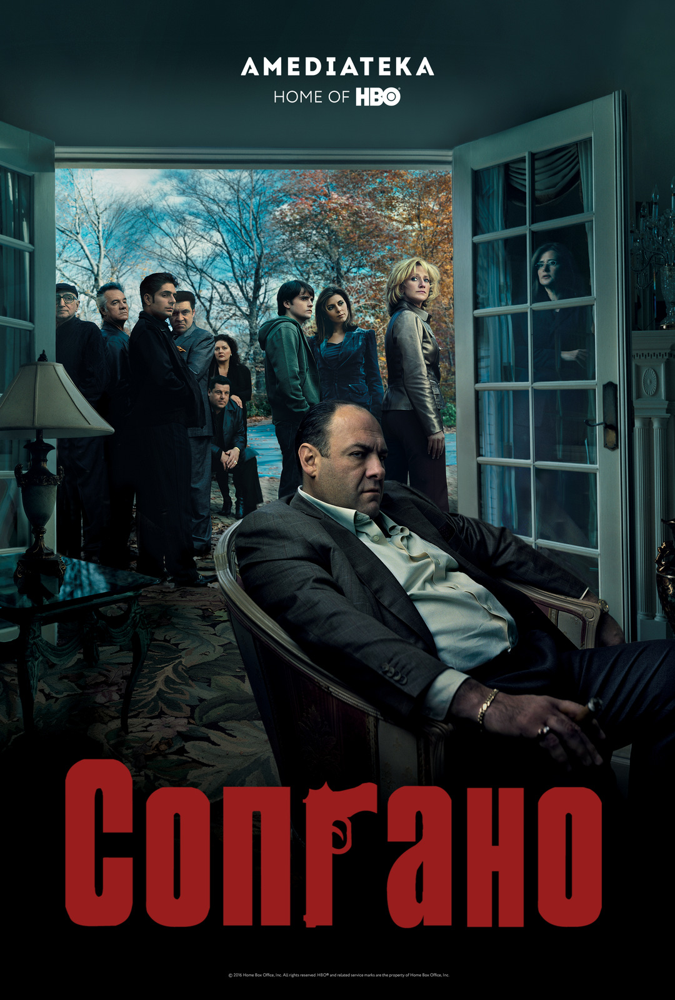

(нажми на картинку, чтобы увеличить)
История жизни современного мафиози Тони Сопрано, который пытается балансировать между семьёй и криминальным миром Нью-Джерси. Психологическая драма с чёрным юмором.
© Все права защищены